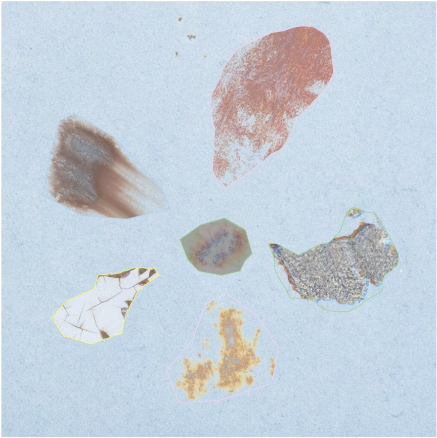

”最初も最期も全部決まりきってて、
胎の外へ押し出された慣性でしかなくても、
道のりを君に捧ごう。
とどのつまり、命の意味は過程に宿る。”

123 I give it away.
もう、全部渡しちゃいたい！
堂々巡りで構わない。
もうどうしよう！
ねえ、どうする？
123 I give it away.
もう、全部渡しちゃいたい！
これじゃ恋だろ！
って恋なの？
わかんないよいつも！
信じたい事だけ信じようよ、もう。
言い訳上手い奴から濁る言霊。
超能力だって、うん、多分いけるし
空飛ぶなら君と。
揺られ、揺られ、繋がるロープウェイ。
流れるまま運ぶ人生。
だらしない僕らの、
幸せってなんでしょう。
それはこのままぶらぶら揺られて、
まともになれたら万々歳！
だなんて、
ネタバレ映画、見続けんのも飽き飽きするよ。
123 I give it away.
もう、全部渡しちゃいたい！
「「「愛してる」」」
言葉フロムEGO。
毒も薬も不履行。
パレードの続きは誰かがやる。
晴れた日に僕ら、街を飛び出す。
不干渉は優しさと信じて生きたら
自分勝手な世界への同調になってた。
WHAT!?!?!?
最初も最期も全部決まりきってて、
胎の外へ押し出された慣性でしかなくても、
道のりを君に捧ごう。
とどのつまり、命の意味は過程に宿る。
だらしない僕らの、
幸せってなんでしょう。
それはこのままぶらぶら揺られて、
まともになれたら万々歳！
だなんて、
ネタバレ映画、見飽きるなら君と二人で。
だんだん露わになってゆく。
真ん中などないとわかってゆく。
物語を持たない僕たちは、
この恋を飾りにしない。
だんだん露わになってゆく。
その退屈さにすら慣れてゆく。
物語が終わったこの星で、
一行目に何を残してく？
だらしない僕らの、
幸せがなんだろうと、
このままヘラヘラふざけて、
まともをすり抜け生き延びろ。
この一本道をあなたと無駄にしたいだけ。
123 I give it away.
もう、全部渡しちゃいたい！
堂々巡りで構わない。
もうどうしよう！
ねえ、どうする？
123 I give it away.
もう、全部渡しちゃいたい！
これじゃ恋だろ！
って恋なの？
わかんないよいつも！
だらしない！！！
ツアー「蟲」初日に幕張メッセで初披露されたロープウェイ。ラップに近いような気持ちの良いフローに乗せて、ラブソングの"てい"をなした世界への宣戦布告が紡がれる。実際、スキップしたくなるようなリズムと歌い方に紛れて、ただのラブソングではない、Tele自身の人生観や生き様がよく表れた歌詞が魅力的な一曲に仕上がっている。MVもめちゃくちゃ可愛らしくてGoodだ。
「不干渉は優しさと信じて生きたら 自分勝手な世界への同調になってた。」という歌詞には特に彼の生き方、信念のようなものが表れているように思う。これまでもそうだったが、Teleは選挙のときや世界で争いが起こっているときなどに自分のスタンス・意見を明確に述べたり、リツイートなどを通して情報を発信したりする。フォロワーも多く、また世界には色々な人がいるので、それを目にした人(あるいはそれはあなたかもしれない)と意見が食い違うももちろんあるだろう。また、伝えたいことがうまく伝わらなかったり、曲解が生じたりももちろんあり、その言動によって厳しい言葉をかけられることもあった。それでも彼は自分の意見を発信することをやめないだろう。そうするだけの信念があるから。こういう世界へのスタンスを貫き通す姿に私は信頼とリスペクトを感じる。
また、そのような彼のスタンスに対する私たちの姿勢として、当たり前だが、100%同調する必要性もないし、反対ならばそう述べても良い(述べた方が良い)とも思う。最終的に情報の取捨選択をどのようにするのか、世界に対してどのように考え、どのようなスタンスを持つのか。Teleは一定の機会を私たちに供給してくれるが、最終的に主体的に選択していくのは私たち自身であるということは忘れないようにしたいものである。
ありがとう！コメントを表示しました。